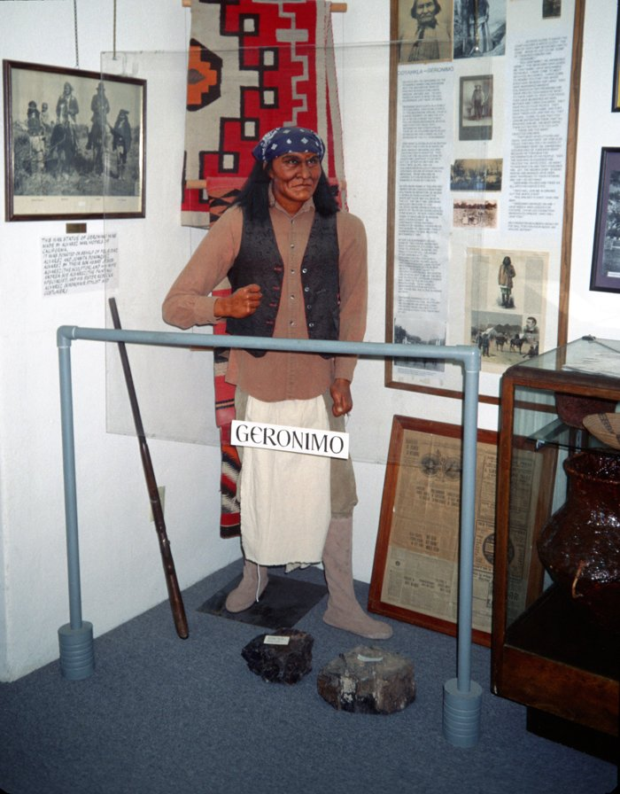
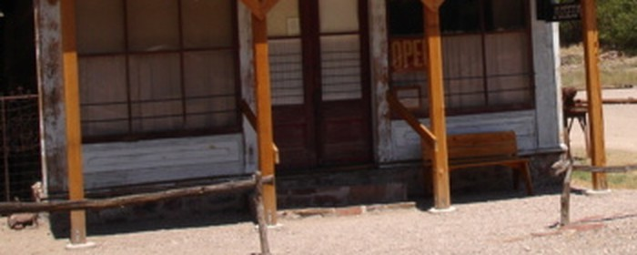

Thursday, November 19, 2026 · T or C · Elephant Butte · Hillsboro · Arrey · Sierra County
Hey neighbors. Here's week three of Hot Springs Weekly. It's free, it takes about five minutes, and it's all about what's going on right here in Sierra County. This week: the Lady Tigers bring home a state runner-up trophy, a $7.5 million waterline contract on the T or C agenda, more time to weigh in on off-highway vehicles on county highways, a big Saturday with a turkey shoot and a Pink Floyd tribute, and the answer to last week's Treasure Hunt.
Hot Springs Weekly is a personal, independent project. It is not affiliated with, endorsed by, or representative of the City of Truth or Consequences. City information comes from public records and official city notices.
Around town
Toys for Tots sign-ups are open. The program serves children of all ages and income levels, plus adults over 18 with a developmental or cognitive disability. Families register by scanning the QR code on the sign-up flyer. Questions: Charis Baxter, program director at The Club, 575-888-0174. TCMSD post
Shop with a Cop: T or C Police say 2026 applications are available at the department's Admin Office. T or C Police on Facebook
Thanksgiving Day potluck: T or C Brewing, 410 N. Broadway, hosts its yearly community potluck on Thursday, Nov 26. Doors open at 1 p.m. and the meal starts at 2. The brewery supplies the turkey, mashed potatoes and gravy; bring a dish to share. Admission is a $5 donation to the Matthew 25 Food Pantry. Event listing
County offices close early next week: Sierra County offices close at noon Wednesday, Nov 25, and stay closed Thursday and Friday, Nov 26 and 27, for Thanksgiving. County 2026 holiday calendar
T or C City Commission
$7.5 million waterline contract on Wednesday's agenda: the commission was asked Wednesday, Nov 18, to award the Critical Waterline Replacements project to Morrow Enterprises, the lowest of six bids, for $7,513,638.75. The work covers about 36,128 feet of waterline, 316 service connections with new meters and meter boxes, valves and fire hydrants, and repairs to the streets, sidewalks and curbs it disturbs. Construction is expected to take 540 days. The packet says the construction money comes from the state Water Trust Board, with federal HUD money that paid for the design serving as the match. Agenda · Packet
Water bonds and sewer design: also on the agenda were the first reading of Ordinance 775, which would authorize $4,811,000 in water system improvement revenue bonds, and a $99,033.08 design contract with Bohannan Huston to rehabilitate the city's vacuum sewer station and collection system, paid through a state Clean Water loan fund. Packet
Police and solar items: the agenda included a $1 million state Local Solar Access Fund grant for solar canopies at the Police Station and at the downtown parking area next to the new electric vehicle chargers; a $306,099 New Mexico Finance Authority loan to buy police vehicles and equipment; and a two-year renewal of the police chief's contract, which the packet says comes with a new salary level. Packet
City surplus auction, Saturday, Dec 5: a resolution on the agenda would send surplus city property to a Willard Hall Auctions sale at the Sierra County Fairgrounds, 1321 Hyde St. The commission also took up a proclamation naming Nov 28 Small Business Saturday.
Updates: as of Thursday morning, the city had not posted what the commission decided on these items. Its next regular meeting is Wednesday, Dec 16, at 9 a.m. The Cantrell Dam project kickoff meeting is today, Thursday, 4:30 to 5:30 p.m., at the Albert Lyon Event Center, 2953 S. Broadway (city notice).
Elephant Butte City Council
Council met Wednesday: the Nov 18 agenda included final public hearings on Ordinance 231 (the 2021 International Fire Code) and Ordinance 232 (prohibited fireworks acts and penalties), a proposed city policy on artificial intelligence (Resolution 26-27-118), a records retention schedule (Resolution 26-27-119), an appointment to a full-time Zoning Commission seat, and presentations from Sheriff Joshua Baker and on vector spraying. As of Wednesday evening, the outcome had not been posted. Agenda
Zoning hearing, Tuesday, Dec 1, 10 a.m., City Hall, 103 Water Ave.: MC Stag Grips, LLC has applied for a home occupation business registration at 556 Lakeshore Drive. City notice
Sierra County Commission
More time to comment on off-highway vehicles: the county now says written comments on its revised resolution for recreational off-highway vehicles on parts of NM 51, 179, 181 and 195 are due Monday, Nov 30, by 5 p.m., to County Manager Amber Vaughn (avaughn@sierraco.org). That replaces the Nov 16 deadline we printed last week. You can also comment in person at the commission's Tuesday, Dec 1, 10 a.m. meeting at 1712 N. Date St. The county's post says the revised resolution includes a speed limit of 45 mph or lower tied to off-highway vehicle use on those roads. County post on Facebook
Tuesday's meeting: the county's agendas page never posted an agenda for the Nov 17 regular meeting, and we found no official record yet of what happened there. County agendas
Screwworm update: the state's tracker still showed two cases in Sierra County as of Nov 17, and 44 animal cases statewide so far. The county Extension office's Pesticide Applicators Workshop is Thursday, Dec 10, at 8:30 a.m. at 2953 S. Broadway, with a screwworm update at 2 p.m.; it's $20 for 5 credits, and you need to RSVP by Dec 8 at 575-894-2375. ScrewwormNM.org · County post
Schools
Career Fair presenters wanted: T or C schools want local workers to show students what they do at the Feb 19, 2027 Career Fair, 8:30 a.m. to 2:30 p.m., 1500 N. Silver St. Bring your tools of the trade. RSVP by Jan 15 to kselberg@torcschools.net or sforrister@torcschools.net. TCMSD
Capstone interns: Las Palomas Fire and EMS congratulated Hot Springs High seniors Pazlee Hanson and Jewelysa Requejo on finishing their Capstone internships with the department.
State runner-up after 33 years: the Lady Tigers finished as Class 3A state runner-up on Saturday, Nov 14, at the Rio Rancho Event Center. It was the program's first state championship match since 1993. As the No. 2 seed, they beat No. 10 Cottonwood Classical Prep 3-2, No. 6 Sandia Prep 3-1 and district rival No. 5 Cobre 3-0, then fell to top-seeded St. Michael's 25-10, 25-17, 25-18. They finished 23-4 and 6-0 in district. Midnight Horizons Sports
All-Star picks: Taylor Littleton (Green team) and Bristol Riggs (Red team) were picked for the 3A/4A All-Star Volleyball Game, and the Tigers' head coach will coach the Green team. TCMSD
Football
Season over: Tiger football's season ended in the second round of the state playoffs, Saturday, Nov 14, at Hope Christian in Albuquerque, a week after the 34-7 first-round win at West Las Vegas. Midnight Horizons Sports
Report it
Spot a problem around T or C? Here's who to call.
Water leak, water or sewer problem: call the Daupler line at (575) 223-1930, or the Water Office at (575) 894-7331.
Outage alerts: call the Water Department to update your phone number so Daupler can reach you. (Water Watch)
Out at the Spaceport
A flight test corridor to Texas: Spaceport America, Midland, Texas, and the aircraft company Starfighters Space announced Wednesday, Nov 18, that they've signed a letter of intent to work toward a dedicated high-speed flight test corridor of about 250 nautical miles between Spaceport America and Midland's spaceport, for supersonic and hypersonic test flights and, someday, launches. A letter of intent is a first step; it doesn't commit any money. Spaceport America
Virgin Galactic's schedule: in its Nov 12 results, Virgin Galactic said its new spaceship Apeiron, now at Spaceport America, will start with a high-altitude flight still attached to its carrier plane, then its first glide flight, expected in January. First commercial spaceflight is still targeted for early in the second quarter of 2027. Virgin Galactic
Tours: Saturdays at 9 a.m. from the Geronimo Trail Visitor Center, 523 N. Broadway. Book here
5 jobs hiring this week
Five openings around the county. Pay is listed only where the posting shows it.
Facilities Maintenance Tech I, City of T or C. Open until filled. City careers
Water / Wastewater General Laborer, City of T or C. Open until filled. City careers
Library Clerk (part time), City of T or C. Open until filled. Applications can be dropped off at Human Resources or emailed to humanresources@torcnm.gov. City careers
Registration Clerk (full time), Sierra Vista Hospital, T or C. SVH careers
CNA / Unit Clerk, Med Surg (full time or as needed), Sierra Vista Hospital. CNA and BLS certification required. SVH careers
Hiring? Send us your opening and we'll consider it for next week.
Lake levels and fishing
Elephant Butte: State Parks lists the lake at 4,317 feet, holding about 231,300 acre-feet. The main ramp at Marina del Sur and Rock Canyon ramp are open; South Monticello is still closed. Watch for submerged debris. Park: 575-744-5923. (State Parks, ramp status updated Nov 9)
Caballo: State Parks lists 4,139.24 feet and about 26,360 acre-feet. West ramp open, east ramp closed. Game & Fish says water levels are shifting after the recent Rio Grande flooding, so use caution in low-water areas. Park: 575-743-3942. (State Parks · Game & Fish, Nov 12)
Fishing: Game & Fish hasn't had a new Elephant Butte fishing report since Oct 22. Caught something? Tell us.
Weather, burn rules and roads
Weather around T or C: partly sunny this morning, then becoming sunny, high near 68, with south winds 10 to 15 mph in the afternoon and gusts as high as 23 mph. Friday is sunny, high near 70, but windy, with afternoon winds 19 to 24 mph and gusts as high as 34 mph. The weekend turns cooler: sunny Saturday, high near 60, and a low around 34 Saturday night; Sunday sunny, high near 58. No weather alerts as of Thursday morning. (NWS forecast)
Burn rules: the Gila National Forest lists fire danger as low, with no forest-wide fire restriction. (Gila NF alerts)
Kingston power outage: Sierra Electric Cooperative has a planned outage for part of the Kingston area today, Thursday, Nov 19, from 9 AM to about 2 PM, while crews finish a conversion project.
Road closure today, Thursday, Nov 19, 7 a.m. to 5 p.m.: Broadway and Morgan, for the Shovel Ready infrastructure project. (City alerts)
Water service disruption and road closure today, Thursday, Nov 19, 7 a.m. to 5 p.m.: Kopra and Parkway/Golf Club Drive, for the WSPI-1 water project. (City alerts)
Ongoing road closure since Nov 2: Main Street from Clancy to McAdoo, and McAdoo from Clancy to Daniels, for the Shovel Ready infrastructure project. (City alerts)
Shooting range closed Saturday, Nov 21 (the city's notice lists Friday), 8 a.m. to 3 p.m., for a Rio Vaqueros maintenance workday. (City alerts)
I-25: NMDOT's pavement work between mile markers 75.5 and 85 near Williamsburg continues, with lane closures as needed in both directions. (NMDOT project page · NMRoads)
This weekend
4-H Turkey Shoot, Saturday, Nov 21, 9 a.m. to 2 p.m., Adobe Hills Shooting Range. It was moved to this date so the volleyball and football players could compete at state. Tickets are $2 each or 7 for $10, with a limit of 2 turkeys per person, and all proceeds go to Sierra County 4-H. TCMSD post
Sierra County Farmers Market, Saturday, 10 a.m., Ralph Edwards Park. Produce, baked goods, prepared food and handmade items, and they take SNAP/EBT, Double Up Food Bucks and WIC. After this one, the only other 2026 date is Dec 19. Details
Saturday night music: the Pink Floyd tribute Shine On Floyd plays the T or C Civic, 400 W. Fourth, at 7 p.m. (doors at 6), $30 plus a $4.75 fee (details). Or catch the Rockabilly Strangers at T or C Brewing, 410 N. Broadway, 7 to 10 p.m., no cover (details).
Out at Caballo Saturday: classical guitar by Vance Koenig at Shattuck Vineyard, 2:30 to 5:30 p.m. (details), and Southwest Expeditions' last Star Party and Paddle of November on Caballo Lake, 3:30 to 6:30 p.m., $75 to $170 (details).
Coming up later (not this weekend)
Sat Nov 28: the Elephant Butte Fine Arts and Crafts Show, 9 a.m. to 4 p.m., free, at two spots: the Elephant Butte RV Resort Events Center, 402 Butte Blvd., and Bigfoot Wine Patio, 212 Warm Springs Blvd. Raffle sales benefit Sierra County Cancer Assistance (details). It's also Small Business Saturday, with MainStreet's gift-card raffle for $20+ purchases at local shops (raffle details).
Fri Dec 11:Old-Fashioned Christmas downtown: tree lighting at Evelyn Renfro Park at 6 p.m., the Parade of Lights at 6:30, then Santa at Healing Waters Plaza. Free (details).
Sat Dec 12: the Luminaria Beachwalk at Elephant Butte Lake State Park, 5:30 to 8 p.m. State park fee is $5 per car. Vendor spots: Mark Jimenez, 575-740-2706 (details).
Gas prices around town
These are current pump numbers, not a news story.
T or C, regular: $3.539 a gallon at Love's, 224 Dr Hubble Rd (I-25 exit 79), as of Wednesday evening, Nov 18. Diesel: $5.589. (Love's)
Statewide: AAA puts New Mexico's average for regular at $3.58, down from $3.79 a week ago. (AAA New Mexico averages)
Police and sheriff blotter
T or C Police post their monthly numbers early each month. November's should come in early December, and we'll run them then. October's numbers ran last week.
Neither the T or C Police nor the Sierra County Sheriff's Office, which also covers Elephant Butte and Williamsburg, posted arrest news we could find this week. That's a gap in the records, not a claim that nothing happened.
County emergency alerts: text SIERRACO to 80946.
Lost, found and looking for a home
Adoptable pet of the week: Bear. He's an Australian Shepherd mix puppy, about 6 months old, at Desert Haven Animal Rescue (Sierra County Humane Society) in Williamsburg. His page says he's friendly with people, dogs, cats and kids, housetrained, already has basic training, and "will do anything for a treat." He's neutered, microchipped and up to date on shots. Adoption fee: $75. Desert Haven, 15576 NM-187, Williamsburg · (575) 740-0643 · Bear's page
Lost or found a pet? Reply and we'll run it free.
Free help for local families
We give these spots away free to local folks who help kids and families. Nobody paid to be here.
The Olive Tree. Free mental health and substance-use help for Sierra County residents of all ages, including people without insurance, plus creative arts and wellness classes and support for people coming out of incarceration. 808 Fir St., T or C · (575) 208-4045 · olivetreenm.org
Little Things Matter (AppleTree Educational Center). Free home visits from pregnancy up to age 3, with help on development, car seats and breastfeeding, plus a dads' group. English and Spanish. (575) 894-5646
Aprendamos Early Intervention. Worried your baby or toddler is behind on talking or walking? Free help for kids from birth to 3, mostly at home. (575) 526-6682 · info@aitkids.com
T or C Schools Family Resource Center. Short on supplies, clothes or other basics for your T or C students? Start here. (575) 894-8166
Matthew 25 Food Pantry. Free groceries every Thursday, 9 to 11 a.m., at 405 Austin St. No ID needed. torcmatthew25foodpantry@gmail.com
Neighbors of the Week
This week, our Neighbors of the Week are the Hot Springs Lady Tigers volleyball team and their coaches. They went 23-4, swept their district, and played for a state title for the first time since 1993. They didn't bring home the trophy, but they brought home a lot of pride for this town. Thanks for the ride, Tigers.
Know somebody who quietly makes this place better? The guy who fixes everybody's swamp cooler, the lady who feeds the strays, the coach who never misses a practice? Reply with their name and why. We'll feature them here.
Photo of the Week
Send us your best shot from around the county: sunsets over the Butte, the river, the Caballos, your dog at the hot springs. Real photos only, from you. We'll credit you by name. Reply with the photo and where you took it.
You Decide, Sierra County
Last week's question was: when you have a free Saturday here, what do you wish there was more of?
Last week's poll and guess box had a glitch on our end, and no votes came through. Sorry about that. It's fixed, so give this week's a try!
This week's question: which holiday event are you most looking forward to?
Tap your answer above, then hit Submit vote. No sign-up needed. We'll share the results next week. If you add your name, you agree we can print it with the results.
Entrepreneur Spotlight
Got a business or an idea you're building in Sierra County? We'll feature one local entrepreneur a week: what you do, why you started, and what you need. It's $15 per issue, and the first few are free. You'll get a signed agreement that your idea stays yours. Call or text 575-740-3555.
Sierra County Treasure Hunt
Last week we asked where in Sierra County that photo was. It's the Geronimo Springs Museum, 211 Main St. in T or C. The photo shows the life-size wax statue of Geronimo in the museum's Apache Room.
Last week's poll and guess box had a glitch on our end, and no votes came through. Sorry about that. It's fixed, so give this week's a try!

Here's the original photo, by Miller Photography Studio, public domain, via the National Archives and Wikimedia Commons.
This week's hunt: where in Sierra County is this? Here's a hint: it's been around since 1880.

Type your guess above and send it, no sign-up needed.
We'll reveal the answer next week and print the names of everyone who got it right. Photo: National Archives and Records Administration, public domain, via Wikimedia Commons; we'll link the original next week.
Above the Hot Springs
What's up in our sky, Nov 19 to 26.
Moon and Saturn: the bright waxing moon slides past Saturn in the evening sky Thursday through Saturday, Nov 19 to 21. (When the Curves Line Up)
Full supermoon: the moon is full Tuesday, Nov 24, at 7:53 a.m. our time. NASA says it's the first of three supermoons in a row. (U.S. Naval Observatory, NASA)
Before sunrise: bright Venus is low in the east-southeast, with Jupiter and Mars higher up near Regulus. Mercury is at its farthest from the sun in our morning sky on Friday, Nov 20. (When the Curves Line Up)
Sunset in T or C: 5:05 p.m. today, Thursday, Nov 19, and 5:03 p.m. by Thursday, Nov 26. (U.S. Naval Observatory)
Did you know?
Elephant Butte Dam was first called Engle Dam, after the nearby railroad stop at Engle. When it was built in 1916, it was the largest irrigation dam anywhere except Egypt's Aswan Dam, and it held back what was then the world's largest artificial lake. (Wikipedia, citing the Albuquerque Journal and Popular Mechanics)
Sponsor Hot Springs Weekly
Want your business in front of your neighbors every week? Founding sponsors get the first 2 months free, then $25 a month, locked in. Call or text 575-740-3555.
Got a tip, an event or a correction? Just reply. · Forward this to a neighbor, or they can subscribe free at hotspringsweekly.beehiiv.com/subscribe · Hot Springs Weekly is an independent newsletter by BRA Holding Co LLC, Truth or Consequences, NM.